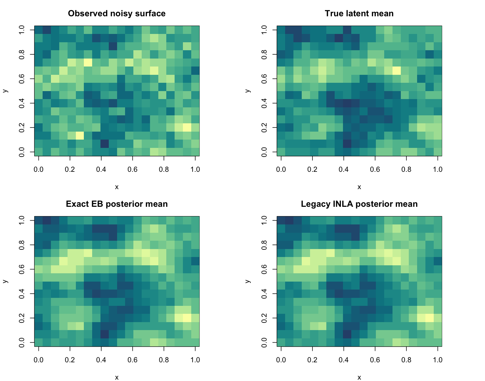

Generated on 2026-04-12 15:43:59 CDT
inla.spde2.pcmatern() and INLA’s internal EB optimization
with joint PC priors on both range and sigma.mlik
reported by INLA is still not directly comparable to the exact method’s
raw marginal log-likelihood, even though both methods now fit range and
sigma.| method | fitted_range | fitted_sigma | fitted_beta |
|---|---|---|---|
| Exact EB | 0.2914 | 0.3527 | 0.1959 |
| Legacy INLA + Joint PC prior | 0.3035 | 0.3630 | 0.1958 |
| method | elapsed_sec |
|---|---|
| Exact EB | 14.3890 |
| Legacy INLA + Joint PC prior | 4.8570 |
| metric | value |
|---|---|
| corr_exact_vs_legacy | 0.999996 |
| rmse_exact_vs_legacy | 0.001070 |
| rmse_exact_vs_truth | 0.149820 |
| rmse_legacy_vs_truth | 0.149895 |
| corr_exact_vs_truth | 0.906784 |
| corr_legacy_vs_truth | 0.906751 |
Figure:

| quantity | value |
|---|---|
| Exact log marginal likelihood at exact optimum | -89.024405 |
| Exact log marginal likelihood at legacy fitted range/sigma (beta profiled) | -89.052058 |
| Gap: exact optimum minus profiled legacy-hyperparameter objective | 0.027654 |
| Legacy INLA raw mlik (not directly comparable) | -89.052058 |
Interpretation:
mlik includes a different
model/objective configuration.